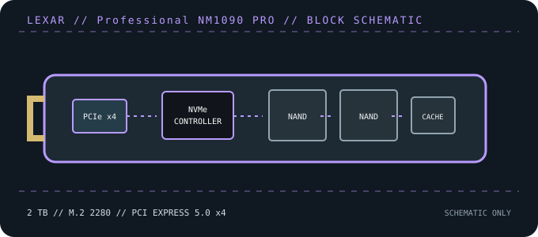

[ PCIE 5.0 NVME DRIVES // IDENTIFIED PRODUCT ]
Lexar Professional NM1090 PRO 2 TB
2 TB PCIe Gen5 x4 M.2 2280 NVMe SSD in Lexar’s NM1090 PRO family. Published peak ratings are 14,000/13,000 MB/s sequential read/write; performance and the retail part code must be checked against the exact regional revision.

IDENTIFICATION: Confirm the printed model code, capacity, suffix, hardware revision and firmware against the actual drive. Similar family names can denote different heatsinks, controller platforms and performance. Values here identify the cited 2 TB SKU and remain subject to the linked manufacturer documentation.
Manufacturer-identified specifications
| Model / manufacturer code | Lexar Professional NM1090 PRO 2 TB — not published in cited manufacturer product materials |
|---|---|
| Capacity / physical format | 2 TB; M.2 2280 PCIe NVMe module |
| Interface / lane width | PCI Express 5.0 x4; backward operation depends on host PCIe/NVMe support. |
| Protocol | NVMe command protocol; exact revision and optional features depend on drive firmware and host support. |
| Vendor-rated sequential performance | Up to 14,000 MB/s read / 13,000 MB/s write; peak ratings, not sustained guarantees. |
| Endurance / warranty | 1,400 TBW (independent database/review reporting; verify regional SKU); 5-year limited warranty (regional terms apply) |
| Controller / flash | SMI SM2508 (product-family reporting); 3D TLC NAND. Component details can vary by production revision; use the exact drive label and current manufacturer documentation. |
| Cooling / package note | Confirm from the exact package and current manual whether the selected NM1090 PRO SKU has a factory heatsink; verify module height, pad contact and motherboard-cover clearance before installation. |
Compatibility, installation & service
- Requires an M.2 2280 NVMe socket; maximum throughput needs PCIe 5.0 x4. Backward compatibility operates at the host’s negotiated generation and does not turn an M.2 SATA-only socket into an NVMe slot.
- Check the exact suffix and supplied heatsink/accessory before installing beneath a board cover or in a laptop; maintain contact with one thermal solution rather than stacking pads or heat spreaders.
- Confirm host UEFI boot capability, available PCIe lanes, system firmware and any capacity limits; preserve recovery media and encryption keys before replacing a boot disk.
- Before replacing a boot drive, create a recoverable backup and confirm OS recovery media, encryption keys and firmware settings. Follow clean shutdown and electrostatic-discharge precautions; do not hot-plug M.2 unless the platform manual explicitly supports it.
Product references
- Lexar — Professional NM1090 PRO PCIe Gen5 x4 NVMe SSDManufacturer product reference and capacity-specific specifications.
- StorageReview — Lexar Professional NM1090 PRO reviewIndependent review of the NM1090 PRO product family and performance behavior.
- TechPowerUp — Lexar NM1090 PRO 2 TB specificationsIndependent capacity-specific product specification reference.
Manufacturer ratings are capacity- and test-condition-specific. Independent tests characterize only the tested sample and workload. Consult current manuals and support portals for revisions, fit, firmware and warranty conditions.